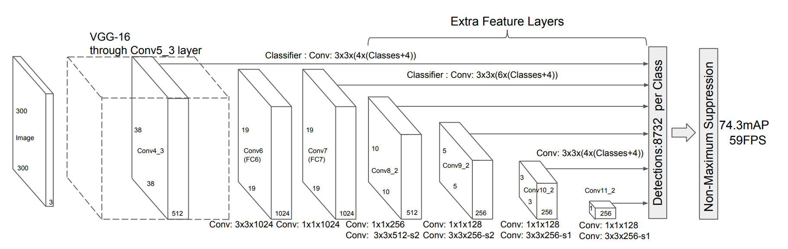
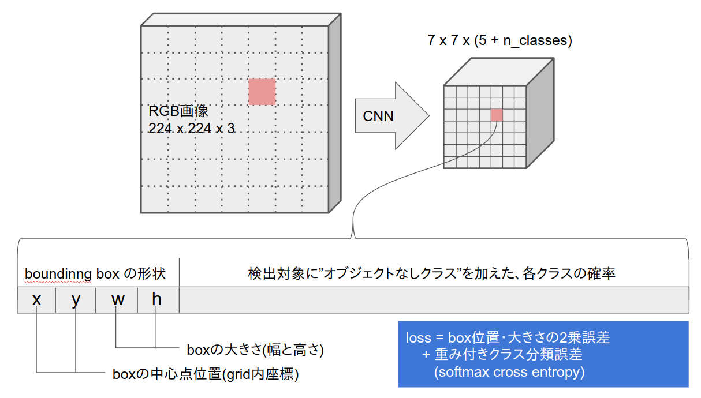
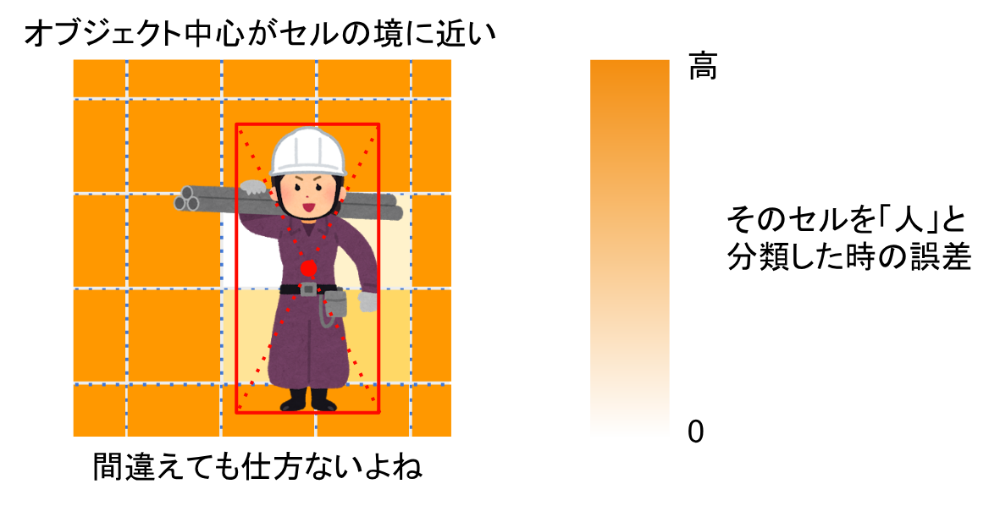
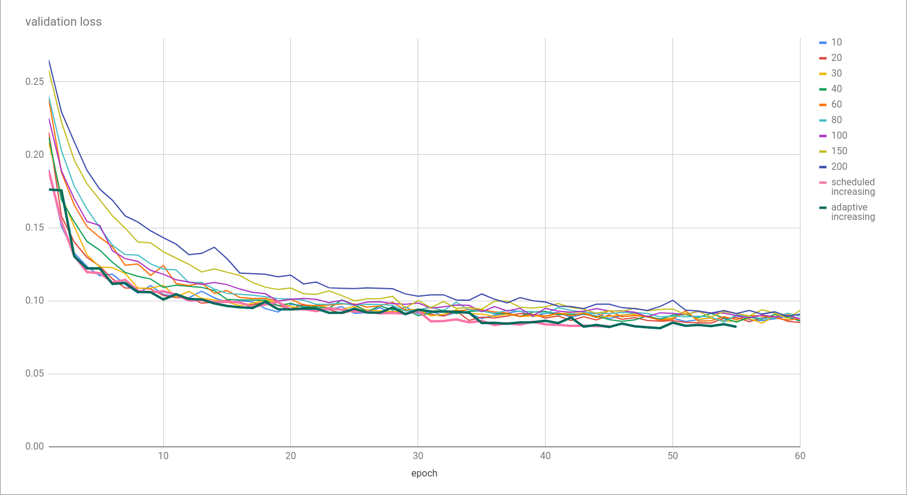
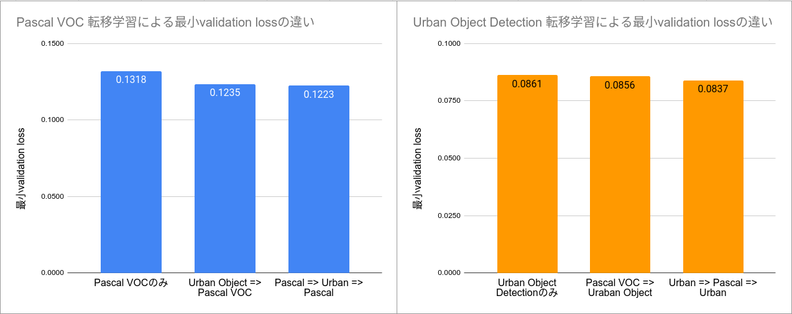
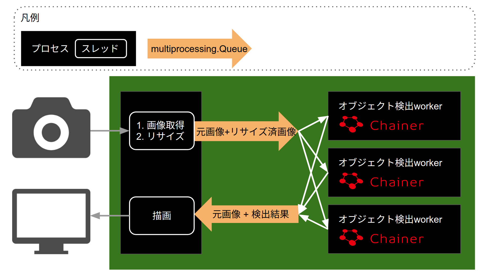
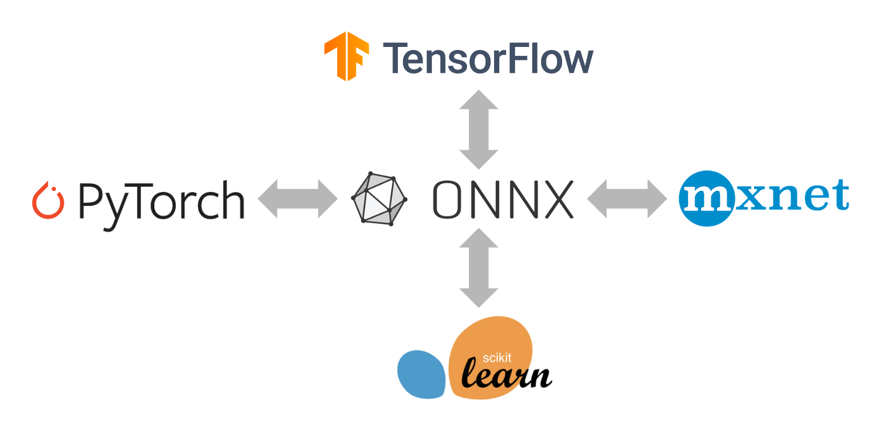
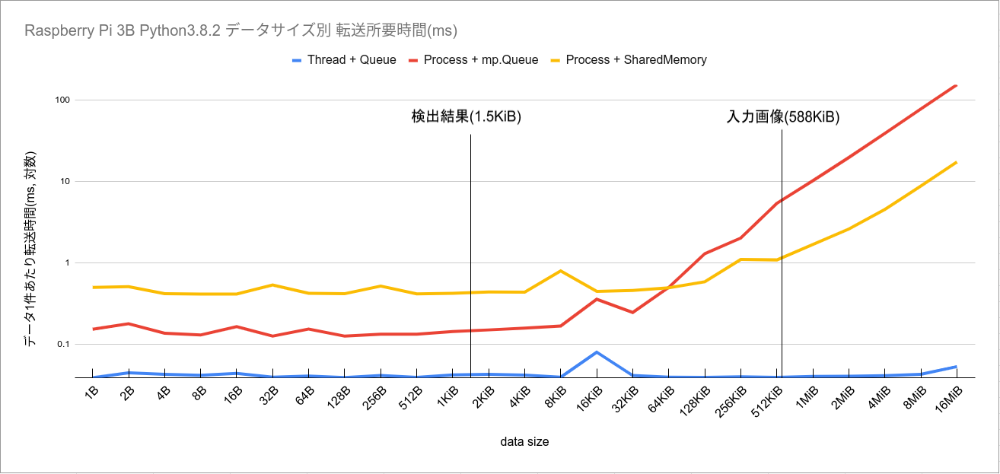
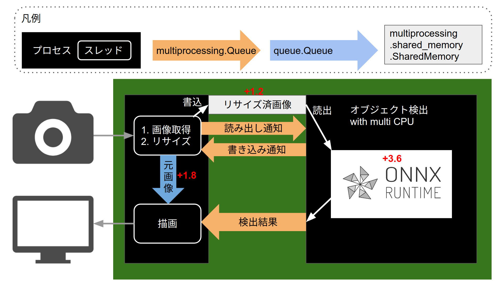

ラズパイ3BのCPUで
リアルタイム
物体検出
@PyCon JP 2020
Raspberry Pi 3Bと私
やりたかったこと
ラズパイでの物体検出
- 軽量なMobileNet SSDが主流
- YouTubeで「Raspberry Pi MobileNet SSD」と検索すると
- ラズパイ本体ではコマ送りがやっと
- リアルタイム処理する場合は
Neural Compute Stickなどを追加するのが主流
今回やったこと
- macで右側のディスプレイに動画を再生
- 右側のディスプレイをラズパイのカメラで撮影
- ラズパイだけで物体検出
- 検出結果を左側のディスプレイに表示
やったこと
赤=乗り物
緑=動物
青=人
これをどう作ってきたか
1. 検出器の作成2. 実行環境整備の2つの観点から紹介します
検出器の作成
考え方
- CNNを使った物体検出器を思いっきり軽量化しよう
- 軽量化のために色々妥協しよう
- 人、動物、乗り物の3種類だけ検出できれば良し
- 精度は実用下限ギリギリで良し
CNNを使った物体検出器
- 2-stage detector
- 1-stage detector
- YOLO
- SSD
2-stage detector
- 何かある箇所を特定=> 何があるかを分類
- R-CNN, Faster R-CNNなど
- 精度は高く、処理には時間がかかる傾向
YOLO: You Only Look Once
- 物体位置の特定と分類を同時に行う
- 処理時間は短く、小さい物体の検出が苦手な傾向

SSD: Single Shot MultiBox Detector
- 小さい物体は手前の解像度が高い層で、
大きい物体は奥の解像度が低い層で検出 - 最近の検出器はSSDの発展型が多いように思われる
 図は Wei Liuら,(2016) SSD: Single Shot MultiBox Detector より引用
今回作ったもの
YOLOを更に簡素化した実装

軽量CNN
少ないパラメータで構成された簡素なCNN
| モデル | パラメータ数 |
|---|---|
| YOLO v3 | 6163万 |
| ResNet-50 | 2556万 |
| MobileNetV1 | 318万 |
| 今回の3物体検出 | 33万 |
学習の工夫1: 無理はさせない
難しい問題を無理に学習しようとして
全体の性能が落ちるのを防ぐ

全体の性能が落ちるのを防ぐ
学習の工夫2: 適応的バッチサイズ
-
学習中にミニバッチサイズ上げることで
学習速度が上がることが示されている
Samuel L. Smithら, (2018) Don't Decay the Learning Rate, Increase the Batch Size - どのタイミングで上げたら良いのか?
- validation lossの改善が5epoch停滞したら
バッチサイズを4倍にするよう実装してみた
=>有効だったので採用
学習の工夫2: 適応的バッチサイズ
学習の工夫3: 繰り返し転移学習
- 2種類のbounding box detection datasetを交互に学習させる
-
Aの検出器を作りたい場合は A => B => A
Bの検出器を作りたい場合は B => A => B
と学習させると(ほんの少しだけ)性能が良くなる
学習の工夫3: 繰り返し転移学習
実行環境整備
ハードウェアの準備
- Raspberry Pi 3B(3B+, 4Bでも可)
- 十分な容量のUSB電源
- 十分な容量のヒートシンク
- ディスプレイの解像度を1280x720に
(FullHDは描画負荷が高くFPS低下に繋がる) - 可能であればRaspberry Pi Camera
(USB Webcamでも動作はするがFPSが低下する)
初期構成
Python3.7で実装。4.4FPS, 遅延1.5秒

ONNX
機械学習モデルを様々なフレームワーク間で
交換するための標準フォーマット

交換するための標準フォーマット
ONNX Runtime
- ONNXで保存されたモデルを使い高速な推論を行うライブラリ
- x86_64, arm64なら pip install onnxruntime
- arm32の場合は自分でコンパイル
- ラズパイ用のビルド済みwhlをgithubで公開中
Python3.8
- 後述のSharedMemoryを目的に導入
3.7から3.8にしただけで速度が向上
計測ミスでしたごめんなさい
プロセス間のデータ受け渡し
- よく使うのはmultiprocessing.Queue
- 簡単、柔軟、便利
- pickleを介すため速度は微妙
SharedMemory
- Python3.8からmultiprocessngモジュールに追加
- 複数プロセスから読み書きできる共有メモリ
- pickleを介さない
- 制約は多く、使いどころは限られる
- 読み書きできるのは"byte-like-object"だけ
- 初期化時に最大サイズ指定が必須
- 明示的に開放しないとメモリリークする
- 今回の用途では使える
(送るデータが固定サイズのnumpy配列だから)
SharedMemoryによるデータ受け渡し
データ本体はSharedMemoryで渡し、
読み書きのタイミングをQueueで通知・制御
読み書きのタイミングをQueueで通知・制御

データ受け渡しにかかる時間
入力はSharedMemory、出力はQueueが良い
計測に使用したコードと結果の詳細はGistに掲載

計測に使用したコードと結果の詳細はGistに掲載
最終構成
Python3.8で実装。11.0FPS、遅延0.4秒
